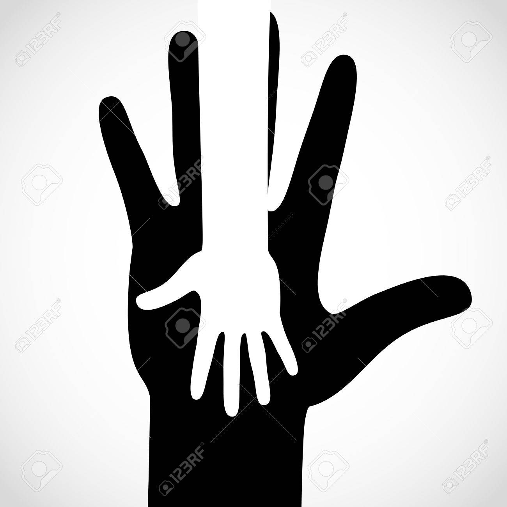
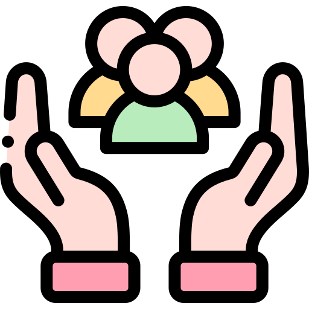

¿Cuál es nuestro propósito?

Nuestro proposito es que las personas o seres que se encuentran desubicados o
están pasando por malos momentos y no saben que hacer con la vida encontrandosen
en un abismo o agujero sin forma de salida, la idea es ayudar a entender
esas situaciones. Enseñar como manejarlas ya que la vida siempre las va a tener
presentes en el desarrollo de cualquier individuo.
¿Se preguntaran por qué ayuda a nuestro entorno? Como veran muchas veces las personas con sus
problemas afectan a los demas con sus actitudes al no poder manejarlas de manera correcta actuan por sentimiento
y no por conciencia.
Una gran falla que a la vez es muy importante porque está demostrando lo mal que se está sintiendo la persona en
el momento, lo cuál es bueno que todas las personas comprendan y entiendan el porque muchas veces hay personas
actuando así y tengan más paciencia con esa persona, traten de ayudar, ya que muchas veces como seres humanos
vamos dejando aún lado a personas que se comportan de esa manera, la iniciativa es que se empiece a utilizar" el
dialogo como herramienta de ayuda" Un concepto que todos deberian de comprender e ir dando a conocer.
Son cositas minimas que demuestran los seres humanos o demostramos como autor de este medio, donde por dentro
podemos estar con la mente y el corazón destrozados, pero por fuera aparentamos siempre estar bien hasta que
se llega a un punto que no se puede dar más y marca para toda una vida, lo que no se debe permitir y el hecho es
que todos entiendan esto, que se vuelva una asociación de ayuda donde se vea involucrado realmente todo el mundo
que importe que si mi familia se está sintiendo bien o mi amigo antes que el dinero, que sea todo más amor y
menos egoismo.
Que se vean todas las sitaciones de ayuda posible tipo así:
Alguién que adquiere el conocimiento por tratar de entender o ayudar a un familiar cercano, un amigo o compartir
la información con demas personas.


Podiendo así mejorar la calidad de vida de muchas personas creando conciencia para que
logre esparcirse la voz o idea a muchas personas.
Brindando el mejor soporte, manteniendo el contenido actualizado y a la par de las sugerencias permitiendo la libre interaccion del cliente.
Brindando el mejor soporte, manteniendo el contenido actualizado y a la par de las sugerencias permitiendo la libre interaccion del cliente.